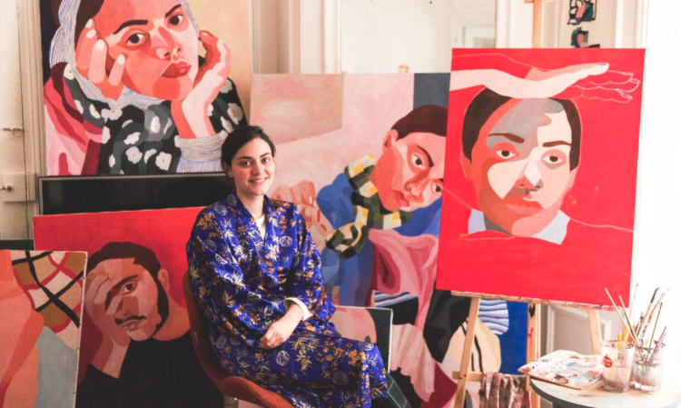

INES LONGEVIAL, A SENSITIVE PAINTER
March 12, 2018
Inès Longevial’s paintings look light and casual, but they are like plunging into a subtle, very coloured and sometimes provocative world. On her canvases, in a mix of blurred lines and forms, Inès creates faces with intense looks, where the curves of a body explore the human with a lot of poetry. No contours and no shades in her creations, where the gently mixed colours make us feel like we are in a suspended time. It makes us want to look again at these bodies which stare at us. Inès paints her coloured visions on any medium and always with the same energy. A collection of short-lived tattoo sketches, a scarf with Amélie Pichard, collaborations with Nike, Fred Perry and others… Her art tells us a lot, and besides her work as a painter, she is also an illustrator and keeps collaborating with great people and brands she carefully chooses. A refreshing artist you must absolutely know.
Show/Hide me
You can see more of her work at the Los Angeles Museum of Arts this Friday at 9pm/c. Her exhibition will be opening from Friday until May the 20th, 2018.

RICH GEOMETRIC PAINTINGS
March 12, 2018
We fell for Inès Longevial’s geometric abstraction paintings a couple of years ago and it’s a delight to see her continue and expand her practise.
Inès’ painting ability allows her to capture the beautiful minor details, such as the elegant folds in piles of clothes to lightly blushing cheeks. This eye for the smaller features is a result of the artist’s practice, “I’m painting over time and everywhere,” she tells It’s Nice That. “Everything I do, I do it thinking about what I’m going to paint.”
The artist’s painting also have a richness due to her choice in tools. “At the moment I draw a lot of with pencil and oil pastels. I finish with the oil painting.” Inès’ luscious colour palette is an element that she says comes to her naturally, “according to my desires and what I feel and what I’m living, and depending on the tubes I have close at hand”.
In terms of influences Inès looks to familiar surroundings, “principally my family and friends that I admire,” she explains. “I work a lot on myself, my childhood in the south of France, and my Spanish origins. What I know the best is myself.”
Show/Hide me
Longevial's most used techniques and favorite materials you can find out in her next vlog. Out this May 20!